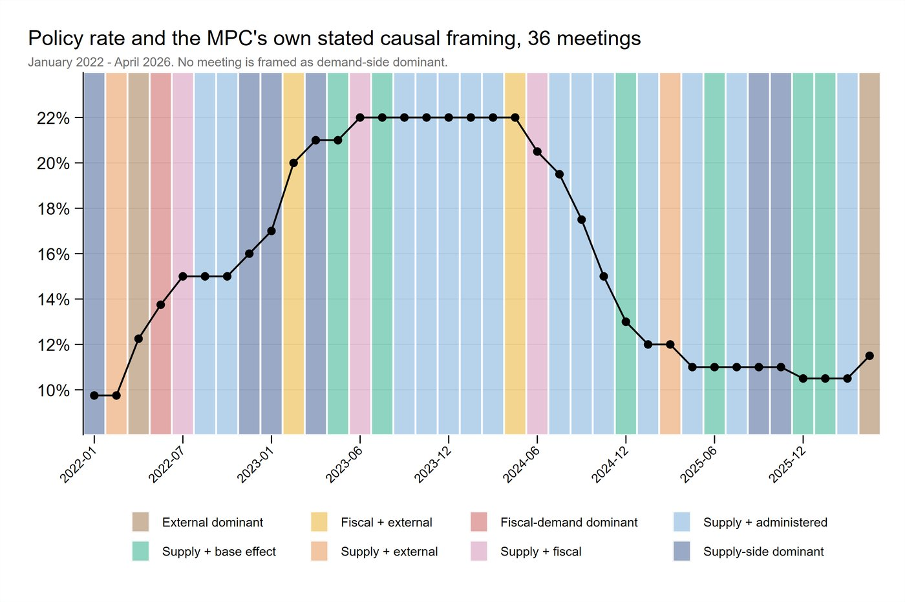

Executive summary
This study asks whether the State Bank of Pakistan’s Monetary Policy Committee maintains a coherent causal narrative of inflation across a major policy cycle. It applies a systematic codebook thematic analysis to all 36 Monetary Policy Statements issued between January 2022 and April 2026, identifying and coding causal claims about inflation and comparing the stated diagnoses with subsequent CPI dynamics.
Findings are preliminary and were presented to the Economic Advisory Group. The full document is currently under review, and revisions were requested following presentation to the EAG Committee.
Research question
How does the SBP Monetary Policy Committee construct and revise its causal narrative of inflation across the 2022–2026 cycle, and how coherently does that narrative connect the stated causes of inflation, the policy response, and the outcomes that followed?
Objectives
- Diagnosis - which causes of inflation are emphasized, downplayed, or omitted?
- Policy logic - which policy logic dominates, and does it shift over time?
- Empirical fit - are stated diagnoses consistent with CPI decomposition over the following six months?
- Revision - is misalignment between forecast and outcome acknowledged in later statements?
Data
The complete corpus of 36 SBP Monetary Policy Statements issued between January 2022 and April 2026, with no sampling. The period covers the major 2022–2026 inflation episode, including the initial shock, monetary tightening, disinflation, easing, and renewed inflationary pressure.
Methodology
The analysis uses codebook thematic analysis (Braun & Clarke, 2021), operationalized through the six-step procedure of Naeem, Ozuem, Howell and Ranfagni (2023), with a hybrid deductive–inductive coding strategy informed by Fereday and Muir-Cochrane (2006). Every paragraph was systematically screened using five pre-specified criteria covering inflation diagnosis, implied causal mechanisms, fiscal–monetary interaction, policy communication, and uncertainty or revision.
Main findings
The analysis identifies several systematic patterns in the Committee’s inflation narratives, including shifts in causal emphasis, policy logic, and the treatment of uncertainty across the inflation cycle.
Across the corpus, only one meeting (May 2022) names demand as the primary cause of inflation; the remaining meetings attribute inflation chiefly to supply-side, fiscal, or external factors. The policy rate itself is rarely named as a cause when inflation falls: fiscal consolidation, agricultural supply, base effects, and global commodity prices are cited more often as reasons for disinflation than the rate itself.
The Committee’s dominant public justification for the same policy instrument changes across the cycle, moving from inflation control and demand moderation during the tightening phase toward growth support as the primary justification for rate cuts from 2024 onward, without an explicit statement in the corpus identifying that shift.
Selected evidence


Contribution
- Treats central bank communication itself as testable evidence, rather than assuming stated reasoning is either correct or irrelevant to policy evaluation.
- Uses a researcher-designed, documented coding pipeline with manual review and an independent verification pass.
- Finds a shift in the dominant public justification attached to the same policy instrument across the cycle, without an explicit statement in the corpus identifying that shift.
Ex-post real rate: nominal policy rate minus contemporaneous headline CPI; this is a descriptive benchmark, not the SBP’s forward-looking real-rate measure.
Current status
The brief has been presented to the EAG Committee and is under review. Revisions were requested, including condensing the document to 2,000–3,000 words.